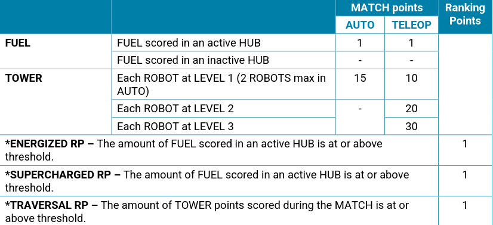

what is this page?
This is Some of my notes from the New FRC 2026 Rebuilt Game!
You can use this to your advantage, whether taking a driver test or need a quick reference!
This is my website and I will talk about some good books I read these years
Environment
Field Dimensions: 317.7 in by 651.2 in
Alliace Zone: 158.6in deep by 317.7in
Zone: 283 in deep by 317.7in
Hub: 41.7x47 wide and 72in above
Bump: 6.513in tall
Trench Clearance: 22.52in
L1 height: 27 in
L2 height: 45 in
L3 height: 63 in
Climb Width: 32.25
Outpost height: 28.1 in
Match Schedule: 20 sec Auto - 2:20 Teleop (with 30 sec Endgame)
in between, transition shift of 10 seconds as soon as 2;20 hits then shifts happen every 25 sec
Cavalry -> Buzz -> dingdingding -> powerup -> Steam -> buzz
24 fuels each on outpost and depot, around 400 balls

Tompkins(Steel talons), SevenLakes(Robospartans), Glow With the flow(New school), Nutz n Bolts
12in outside perimeter, only one arm each side out unless momentary&inconsequential
single gap 1.25in allowed as long as all corners filled, single cap largerd than 1.25 allowed as long as each side >5in
6 AWG for power
120A circuit breaker
motor controller up to 40A
below 40A - minimum 12 AWG
below 30A - minimum 14 AWG
below 20A - minimum 18 AWG
motor power adapter board protected circuit - minimum 22 AWG
CAN - 28 AWG
VRM 2A circuits - 24
2.5 - 5.75 in bumper padding
>2 in for padding
hard parts only 1.25 in
extension up to 4 in from perimeter
vertical extension limit = 30 in
110 in perimeter
ArticleDirectory
About me
THis is FrcRuleBook